Instalación de Redis
Instalación en Windows
Dirección de descarga:https://github.com/redis-windows/redis-windows/releases。
Redis admite 32 y 64 bits. Debes elegir según la plataforma real de tu sistema. Aquí descargamosRedis-x64-xxx.zipel paquete comprimido en el disco C. Después de descomprimir, renombra la carpeta aredis。
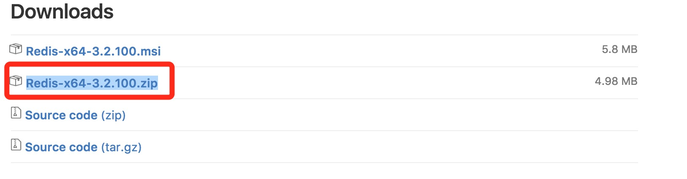
Abre la carpeta, el contenido es el siguiente:

Abre unacmdventana. Usa el comando cd para cambiar el directorio aC:\redisEjecuta:
redis-server.exe redis.windows.conf
Si quieres comodidad, puedes agregar la ruta de redis a las variables de entorno del sistema, así no tendrás que escribir la ruta nuevamente. El archivo redis.windows.conf posterior se puede omitir; si se omite, se usará la configuración predeterminada. Después de ingresarlo, se mostrará la siguiente interfaz:
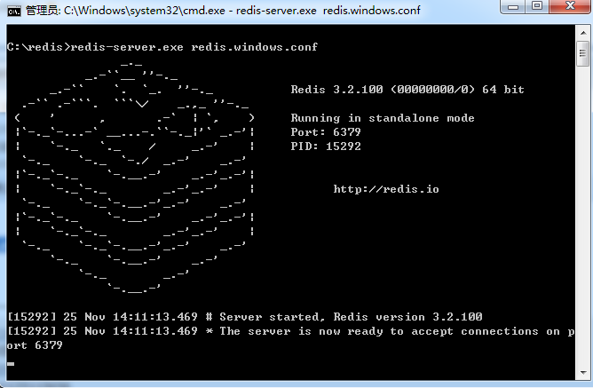
En este momento, abre otra ventana de cmd; no cierres la original, de lo contrario no podrás acceder al servidor.
Cambia al directorio de redis y ejecuta:
redis-cli.exe -h 127.0.0.1 -p 6379
Establecer par clave-valor:
set myKey abc
Recuperar par clave-valor:
get myKey
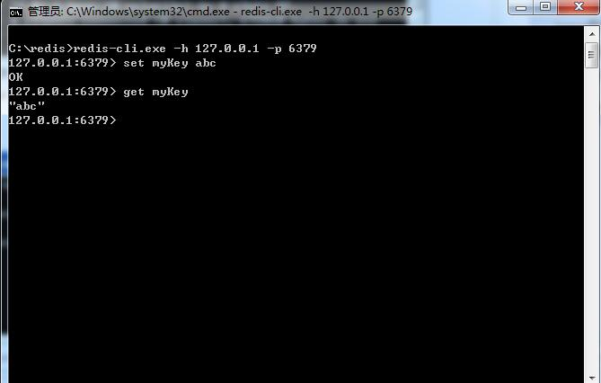
Instalación desde el código fuente en Linux
Dirección de descarga:http://redis.io/download, descarga la última versión estable.
La versión de documento más reciente utilizada en este tutorial es 2.8.17. Descarga e instala:
# wget http://download.redis.io/releases/redis-6.0.8.tar.gz # tar -xzvf redis-6.0.8.tar.gz # cd redis-6.0.8 # make
Después de ejecutarmakedel comando, el de redis-6.0.8srcen el directorio aparecerá el programa de servicio redis-server compilado, y también el programa cliente redis-cli para pruebas:
A continuación, inicia el servicio de redis:
# cd src # ./redis-server
Ten en cuenta que iniciar redis de esta manera usa la configuración predeterminada. También puedes usar parámetros de inicio para indicarle a redis que use un archivo de configuración específico; usa el siguiente comando para iniciarlo.
# cd src # ./redis-server ../redis.conf
redis.confes un archivo de configuración predeterminado. Podemos usar nuestro propio archivo de configuración según sea necesario.
Después de iniciar el proceso del servicio redis, puedes usar el programa cliente de prueba redis-cli para interactuar con el servicio redis. Por ejemplo:
# cd src # ./redis-cli redis> set foo bar OK redis> get foo "bar"
Instalación con el comando apt en Ubuntu
Para instalar Redis en un sistema Ubuntu, puedes usar el siguiente comando:
# sudo apt update # sudo apt install redis-server
Iniciar Redis
# redis-server
¿Verificar si Redis está iniciado?
# redis-cli
El comando anterior abrirá la siguiente terminal:
redis 127.0.0.1:6379>
127.0.0.1 es la IP local, 6379 es el puerto del servicio redis. Ahora ingresamos el comando PING.
redis 127.0.0.1:6379> ping PONG
Lo anterior indica que hemos instalado redis con éxito.
<div style="display:none;"> <hr><h2 id="cs-redis"> Ejecutar Redis en Cloud Studio</h2> <p>A continuación presentamos cómo instalar y usar Redis en Cloud Studio:</p> <ul> <li><p>step1: accede a <a target="_blank" href='https://studio.dev.tencent.com/' rel="noopener noreferrer">Plataforma de desarrolladores de Tencent Cloud</a>, registra/inicia sesión en tu cuenta.</p></li> <li><p>step2: en el menú de entorno de ejecución de la derecha, selecciona: <code>"ubuntu"</code></p> <p><img src='https://dn-coding-net-production-pp.qbox.me/86b0d145-626a-4235-b25e-391d44251cd8.jpg' alt='' /></p></li> <li><p>step3: ejecuta los siguientes comandos en la terminal inferior:</p> <pre>sudo apt-get update sudo apt-get install redis-server</pre> </li> <li><p>step4: inicia Redis:</p><pre>redis-server</pre></li> <li><p>step5: verifica si redis está iniciado:</p><pre>redis-cli</pre></li></ul> <p>Los comandos anteriores abrirán la siguiente terminal:</p> <pre>redis 127.0.0.1:6379></pre> <p>127.0.0.1 es la IP local, 6379 es el puerto del servicio redis. Ahora ingresamos el comando PING:</p> <pre>redis 127.0.0.1:6379> ping PONG</pre> <p>Lo anterior indica que hemos instalado redis con éxito.</p> <p>Ahora CODING está organizando un concurso basado en espacios de trabajo de Cloud Studio: 【Mi concurso de selección de complementos favoritos de Cloud Studio】. Entra al sitio oficial del evento: <a href="https://studio.qcloud.coding.net/campaign/favorite-plugins/index" rel="noopener noreferrer" target="_blank">https://studio.qcloud.coding.net/campaign/favorite-plugins/index</a>, para obtener más información.</p> </div> Otras extensiones
chenming
203***5172@qq.com
Dirección de referencia
Instalación en Mac
1. Sitio web oficialhttp://redis.io/Descarga la última versión estable, aquí es 3.2.0
2. sudo mv a /usr/local/
3. sudo tar -zxf redis-3.2.0.tar para descomprimir el archivo
4. Entra al directorio descomprimido: cd redis-3.2.0
5. sudo make test para probar la compilación
6. sudo make install
chenming
203***5172@qq.com
Dirección de referencia
mengjun
813***532@qq.com
En Mac también puedes instalar usando homebrew, homebrew es el gestor de paquetes de Mac.
1. Ejecutabrew install redis
2. Inicia redis; puedes iniciarlo como servicio en segundo planobrew services start redis. O iniciarlo directamente:redis-server /usr/local/etc/redis.conf
mengjun
813***532@qq.com
Mericustar
100***9847@qq.com
Dirección de referencia
Instalación de Redis en Windows (.msi)
Dirección de descarga en GitHub:https://github.com/MicrosoftArchive/redis/tags
Al descargar, descarga el archivo de instalación msi:
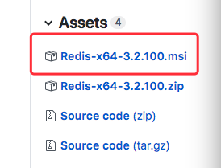
1. Primero haz doble clic en el instalador que acabas de descargar
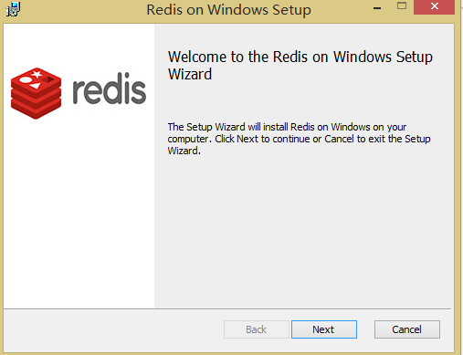
2. Haz clic en Next
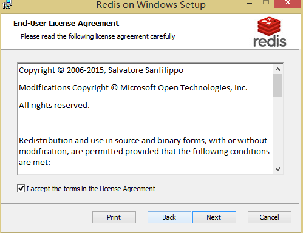
3. Haz clic en Aceptar y continúa con Next
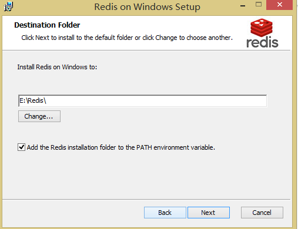
4. Configura el puerto de servicio de Redis, por defecto es6379, deja el predeterminado y haz clic en Next
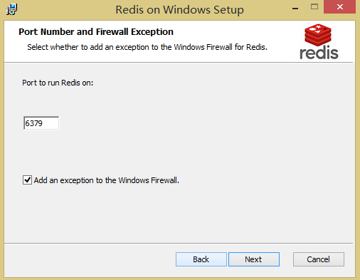
5. Elige la ruta de instalación y marca la casilla (esto es muy importante). Agregar al path configura Redis como un servicio de Windows; de lo contrario, tendrás que ejecutar el comando redis-server redis.windows.conf en ese directorio cada vez, pero en cuanto cierres la ventana de cmd, redis desaparecerá, lo cual es bastante problemático.
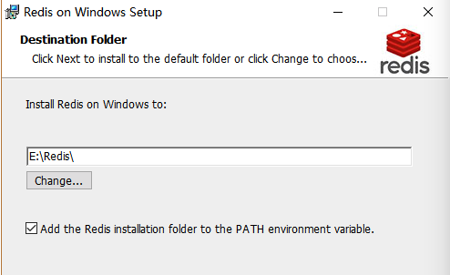
6. Configura Max Memory y luego haz clic en Next para iniciar la instalación
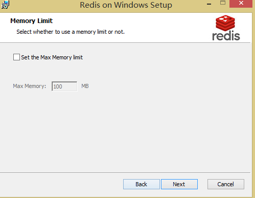
Si el escenario de uso de redis es como base de datos, no configures esta opción, porque una base de datos no puede tolerar la pérdida de datos.
Si se usa como caché temporal, depende de tus necesidades (aquí he establecido un límite máximo de memoria de 1024M)
Especifica el límite máximo de memoria de Redis. Redis carga los datos en la memoria al iniciar. Cuando se alcanza la memoria máxima, Redis primero intenta eliminar las claves expiradas o a punto de expirar. Cuando después de este método aún se alcanza el límite máximo de memoria, no se podrán realizar operaciones de escritura, pero sí de lectura. El nuevo mecanismo de vm de Redis almacena las claves en la memoria y los valores en el área de swap.
7. Instalación completada
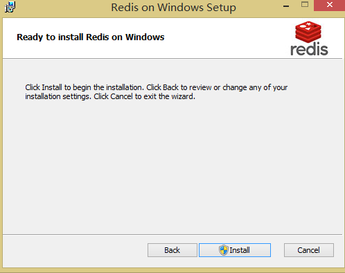
8. Prueba el Redis instalado
Si, como yo, instalaste mediante el archivo msi, puedes ver en “Administración de equipos → Servicios y aplicaciones → Servicios” que Redis se está ejecutando
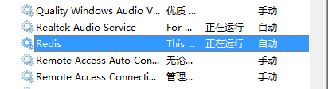
También puedes detenerlo (si no lo detienes, aparecerá un error con el código18012que indica que el puerto local6379está ocupado), y luego en la ventana de cmd entra al directorio raíz de la ruta de instalación de Redis
Ejecuta el comandoredis-server.exe redis.windows.conf, si aparece la siguiente imagen, demuestra que el servicio Redis se inició correctamente:
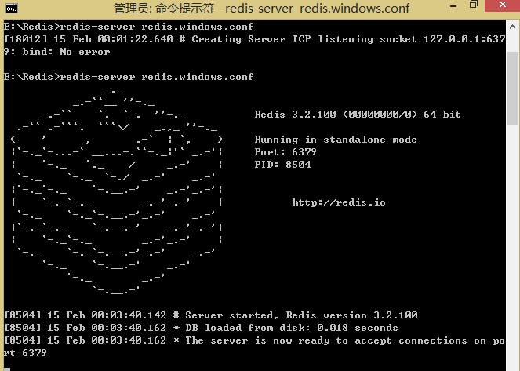
A continuación, realiza una prueba:
Puedes encontrar en el directorio raíz de instalación de Redisredis-cli.exeInicio mediante archivo (yo uso este método), o en cmd primero entre al directorio raíz de instalación de Redis y use el comandoredis-cli.exe -h 192.168.10.61 -p 6379(Nota: cámbielo por su propia IP, localmente puede ser127.0.0.1) de esta manera se abre
Método de prueba: establecer par clave-valor, obtener par clave-valor (aquí mi par clave-valor es peng)
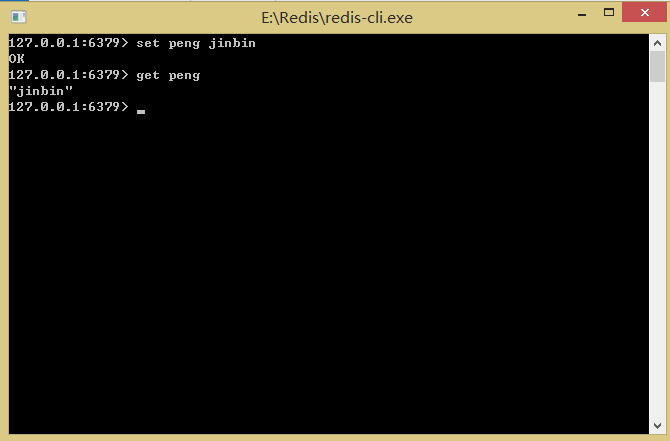
Mericustar
100***9847@qq.com
Dirección de referencia